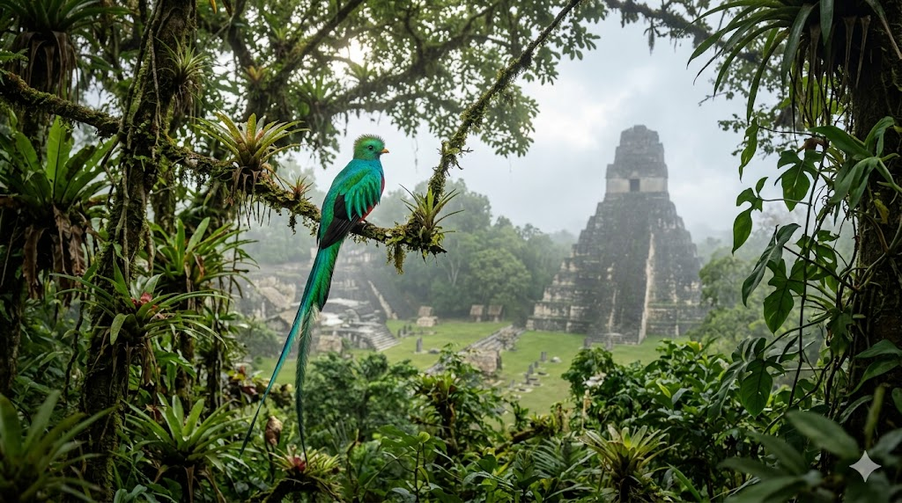

הקזאל המצוי
Resplendent Quetzal • Guatemala
א. אטימולוגיה (חקר השם המלא)
השורש המיתולוגי: quetzalli
שמו של הקזאל אינו רק תיאור זואולוגי, אלא מילה הטעונה בקדושה עתיקה:
המילה נגזרת מהמילה "quetzalli" שפירושה המקורי הוא "נוצה יקרה" או "אמרלד ירוק". עבור תרבויות המאיה והאצטקים, נוצותיו של הקזאל היו יקרות יותר מזהב טהור. השם מקושר ישירות לאל קצלקואטל (או קוקולקן במאיה) – "הנחש המנוצה", המייצג את אל החוכמה, הרוח והבריאה.
כיום בגואטמלה, השם "קזאל" משמש גם כשמו של המטבע הלאומי הרשמי, עדות לערך העצום והמרכזי של הציפור בזהות המדינה.
הסוג: Pharomachrus
מקור: יוונית עתיקה
הלחם של המילים Pharos (גלימה או מעטפת) ו-Makros (ארוך). השם הטקסונומי הזה מתאר בצורה מושלמת ומדויקת את נוצות הזנב הארוכות של הזכר בעונת הרבייה, הנראות כגלימת אמרלד מלכותית הנגררת אחריו במעופו ביער.
המין: mocinno
מקור: לטינית (הקדשה)
שם המין ניתן כהוקרה והקדשה לחוסה מריאנו מוסיניו (José Mariano Mociño), חוקר טבע בוטנאי וזואולוג מקסיקני בולט בן המאה ה-18, שחקר ותיעד את המגוון הביולוגי העשיר של מרכז אמריקה בשליחות הכתר הספרדי.
ניתוח זואולוגי: רבייה ותפוצה באמריקה המרכזית
יא כמות ביצים בכל הטלה
הנקבה מטילה בדרך כלל 2 ביצים בכל מחזור רבייה עונתי. הביצים בעלות גוון תכלכל-בהיר, והן מוטלות בתוך חללי קינון בעצים רקובים גבוהים, לרוב בחורים עמוקים שנוצרו וננטשו במקור על ידי ציפורי נקר.
יב תקופת הדגירה
משך הדגירה על הביצים נמשך בין 17 ל-19 ימים. שני ההורים נוטלים חלק פעיל בדגירה: הזכר בדרך כלל דוגר במהלך שעות היום (כאשר זנבו הארוך בולט לעיתים מחוץ לחור הקן ומתנפנף ברוח), והנקבה מקבלת את משמרת הדגירה במהלך הלילה.
יג תפוצה גאוגרפית
הקזאל הוא תושב אקסקלוסיבי של יערות עננים טרופיים (Cloud Forests) בגבהים שבין 1,200 ל-3,000 מטרים מעל פני הים. תפוצתו משתרעת החל מדרום מקסיקו, עוברת דרך גואטמלה (שם נמצא הריכוז האקולוגי החשוב והשמור ביותר שלו), הונדורס, ניקרגואה, קוסטה ריקה ועד למערב פנמה.
יד מבנה חברתי: מונוגמיה עונתית
המין נחשב למונוגמי עונתי ברובו. בני הזוג יוצרים קשר הדוק לצורך עונת הרבייה בלבד, במהלכה הם בונים ומכשירים יחד את הקן, מגינים עליו ומגדלים את הגוזלים במסירות. לאחר תום העונה הם נפרדים זה מזה, וברוב המקרים ימצאו בני זוג חדשים לעונת הרבייה בשנה העוקבת.
ב. שנות חיים במערכת האקולוגית
קשה מאוד להעריך את תוחלת החיים המדויקת של הקזאל ביערות העננים הסבוכים, אך המחקר המודרני מעריך שהיא עומדת על 3 עד 10 שנים בטבע. באופן היסטורי ומובהק, הקזאל כמעט ואינו שורד בתנאי שבי. דרישות התזונה והמחייה שלו מורכבות ביותר, מה שהופך את האמירה "ימות מלב שבור בכלוב" לבעלת בסיס ביולוגי ממשי ומשמש כסמל לחירות המוחלטת שלו.
ג. גודל ומשקל
אורך גוף בסיסי: 36 - 40 ס"מ (כגודלה של יונה גדולה).
אורך זנב (זכר בלבד): זנבו המפואר יכול להגיע עד ל-65 ס"מ נוספים, מה שהופך את אורכו הכללי למעל מטר אחד בעונת הרבייה.
משקל ממוצע: כ-210 גרם בלבד.
ד. סיבת הבחירה כסמל לאומי (גואטמלה)
הקזאל אומץ באופן רשמי כציפור הלאומית של הרפובליקה של גואטמלה בשנת 1871. הוא נבחר משום שהוא מייצג את אידאל החירות המוחלטת והעצמאות. קיימת אמונה עממית, עתיקה וחזקה במרכז אמריקה, שהקזאל לעולם לא יוכל לחיות בשבי, ואם ייכלא בתוך כלוב הוא ימות במהרה מ"לב שבור". אמונה זו משתקפת ישירות במוטו הלאומי ובשאיפת העם לחופש.
הציפור המלכותית מופיעה בגאווה במרכז דגל גואטמלה ובסמל המדינה הרשמי, כשהיא עומדת זקופה על גבי מגילת העצמאות. עבור אזרחי גואטמלה והעמים הילידים, הקזאל הוא הגשר החי והפועם בין תרבות המאיה המפוארת של העבר לבין הרפובליקה המודרנית של ההווה, ומהווה סמל מרכזי למאבק על הגנת אוצרות הטבע של היערות העתיקים.
ה. הבדלים בין זכר ונקבה במראה
הקזאל מתאפיין בדימורפיזם זוויגי דרמטי ובולט ביותר: הזכר הוא זה שמתהדר בנוצות הזנב המלכותיות והארוכות (הצומחות במלוא תפארתן אך ורק לקראת עונת הרבייה ולאחריה נושרות), ובכרבולת נוצות עדינה וקטנה על ראשו. חזהו של הזכר אדום עז ובוהק. לעומתו, הנקבה נראית צנועה בהרבה, היא חסרה לחלוטין את נוצות הזנב הארוכות המפורסמות, וצבעי גופה התחתון נוטים יותר לגווני חום-אפור וירוק דהוי, צבעים המסייעים לה באופן קריטי להסוואה מושלמת מעיני טורפים בזמן הדגירה בקן.
ו. שם בנגלה של הציפור
קזאל פאקהי (কেতজাল পাখি)
Pakhi = המשמעות היא ציפור בשפה הבנגלית. השם הוא תעתיק של השם הספרדי/ילידי המקורי.
ז. שנת הגילוי (הגדרה טקסונומית)
1832
הציפור תוארה והוגדרה מדעית לראשונה על ידי הזואולוג והפוליטיקאי המקסיקני-פרוסי, פבלו דה לה לאווה (Pablo de la Llave).
ט. תזונה מותאמת ליער העננים
מבחינה תזונתית, הקזאל הוא אומניבור (אוכל כל) המתמקד בעיקר באכילת פירות, ובאופן ספציפי ביותר בפירות של עץ האבוקדו הפראי הקטן (Wild Avocado - ממשפחת העריים). הציפור בולעת את הפירות העגולים בשלמותם כשהיא מרחפת באוויר מולם, מעכלת את בשר הפרי ולבסוף פולטת החוצה את הגרעין השלם, תהליך ההופך אותה למפיצת זרעים אקולוגית חיונית והכרחית לצמיחת יער העננים. בנוסף, כדי להשלים חלבונים, במיוחד בתקופת גידול הגוזלים, הוא ניזון ממגוון חרקים, לטאות זעירות וצפרדעים שלוכד בין הענפים.
ח. נסיבות הגילוי ההיסטוריות והאשליות האופטיות
עבור תרבויות המאיה והאצטקים המפוארות, הקזאל מעולם לא היה זקוק ל"גילוי" מערבי – הוא היה האל הנוכח והשומר בסבך היער. האירופאים הראשונים שתיעדו אותו עשו זאת רק במהלך מסעות המחקר הזואולוגיים והבוטניים המאוחרים של המאה ה-18 וה-19. הקושי הרב לבצע עליו תצפיות רציפות נבע מסביבת המגורים הקיצונית שלו - יערות עננים הרריים גבוהים המכוסים בערפל תמידי, בסבך צמחייה בלתי עביר.
כאשר המדע המערבי זכה סוף סוף לחקור ולתעד את הציפור מקרוב, הוא הוקסם במיוחד מהצבעים הפיזיקליים של נוצותיה. התגלה שצבע האמרלד-ירוק הבוהק והמרהיב של הקזאל אינו נובע כלל מפיגמנט צבע כימי המצוי בנוצה, אלא ממבנה תאי-מיקרוסקופי המייצר "אשליה אופטית" ושבירת אור (Iridescence). כשהאור אינו פוגע בזווית הנכונה בנוצה, הציפור יכולה להיראות אפילו חומה או אפורה לחלוטין.
י. מצב השימור
קרוב לסיכון (Near Threatened - NT)
אוכלוסיית הקזאל המצוי מוגדרת כיום במגמת ירידה עולמית מתמשכת. האיום המרכזי והחמור ביותר על קיומו הוא הרס ופיצול של יערות העננים הייחודיים עקב הרחבת שטחי חקלאות, רעיית צאן וכריתת עצים לא מבוקרת. בתגובה לאיום זה, ממשלת גואטמלה בשיתוף ארגוני סביבה הקימו שמורות טבע מיוחדות ומוגנות (כמו ה-Biotopo del Quetzal) שנועדו אך ורק כדי להגן ולשמר את בתי הגידול ההרריים האחרונים של הסמל הלאומי המקודש שלהם.